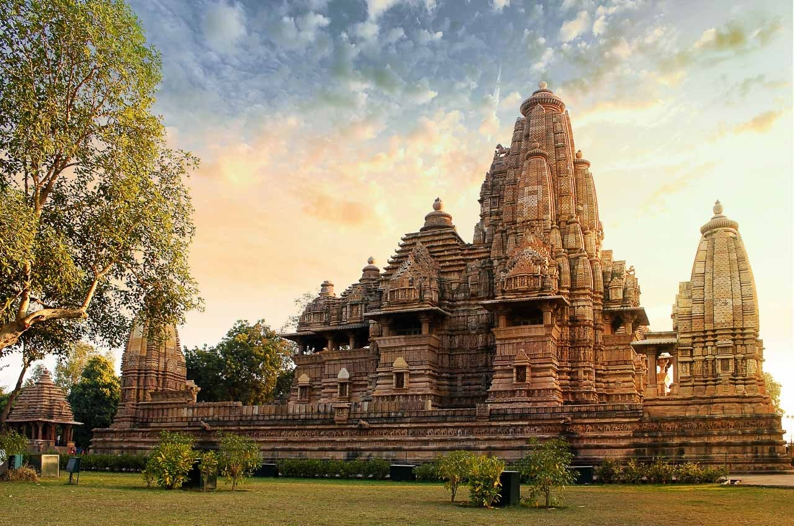
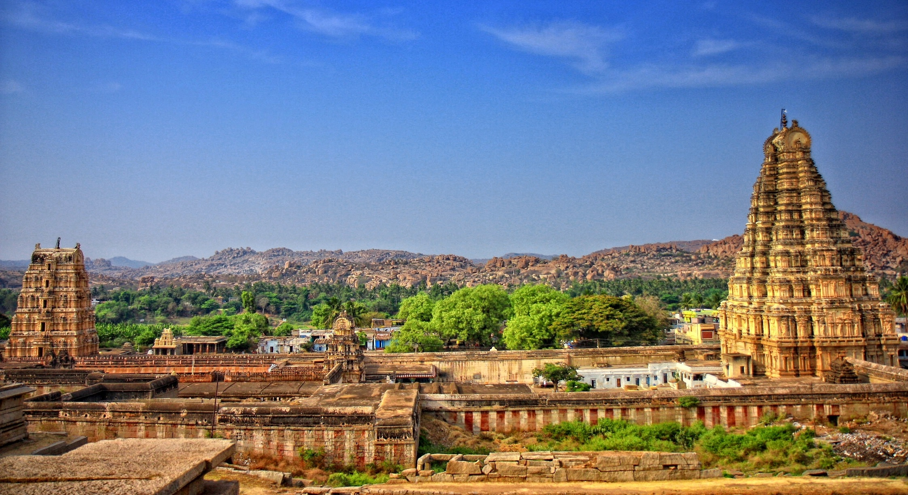

Taj Mahal

The Taj Mahal is an ivory-white marble mausoleum on the right bank of the river Yamuna in Agra, Uttar Pradesh, India.
It
was commissioned in 1631 by the fifth Mughal emperor, Shah Jahan to house the tomb of his beloved wife, Mumtaz Mahal;
it
also houses the tomb of Shah Jahan himself.
Ajanta Caves

The Ajanta Caves are 29 rock-cut Buddhist cave monuments dating from the second century BCE to about 480 CE in the
Aurangabad District of Maharashtra state in India. Ajanta Caves are a UNESCO World Heritage Site.
Ellora Caves

Ellora Caves are a multi-religious rock-cut cave complex with inscriptions dating from the period 6th century CE
onwards, located in the Aurangabad District of Maharashtra, India. They are also called verul caves.
Khajuraho

The Khajuraho Group of Monuments are a group of Hindu and Jain temples in Chhatarpur district, Madhya Pradesh, India. They are about 175 kilometres southeast of Jhansi, 10 kilometres from Khajwa, 9 kilometres from Rajnagar, and 49 kilometres from district headquarter Chhatarpur.
Red Fort

The Red Fort or Lal Qila is a historic fort in the Old Delhi neighbourhood of Delhi, India, that historically served as
the main residence of the Mughal emperors. Emperor Shah Jahan commissioned construction of the Red Fort on 12 May 1638,
when he decided to shift his capital from Agra to Delhi.
Hampi

Hampi is an ancient village in the south Indian state of Karnataka. It’s dotted with numerous ruined temple complexes
from the Vijayanagara Empire. On the south bank of the River Tungabhadra is the 7th-century Hindu Virupaksha Temple,
near the revived Hampi Bazaar. A carved stone chariot stands in front of the huge Vittala Temple site. Southeast of
Hampi, Daroji Bear Sanctuary is home to the Indian sloth bear.
Mysore Palace

Mysore Palace, also known as Amba Vilas Palace, is a historical palace and a royal residence. It is located in Mysore,
Karnataka, India. It used to be the official residence of the Wadiyar dynasty and the seat of the Kingdom of Mysore. The
palace is in the centre of Mysore, and faces the Chamundi Hills eastward.
Hawa Mahal

The Hawa Mahal is a palace in the city of Jaipur, India. Built from red and pink sandstone, it is on the edge of the
City Palace, Jaipur, and extends to the Zenana, or women's chambers.